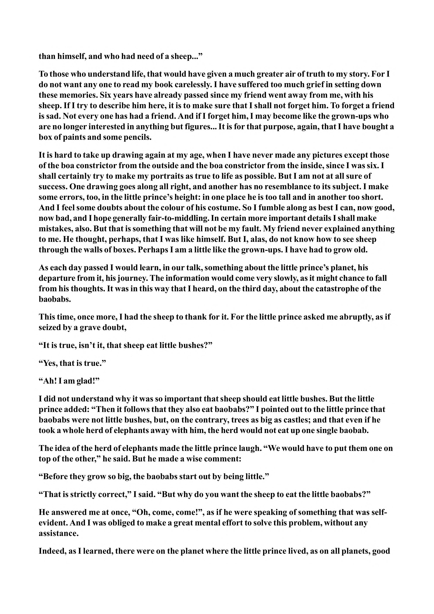

than himself, and who had need of a sheep...” To those who understand life, that would have given a much greater air of truth to my story. Fori do not want any one to read my book carelessly. I have suffered too much grief in setting down these memories. Six years have already passed since my friend went away from me, with his sheep. If I try to describe him here, it is to make sure that I shall not forget him. To forget a friend is sad. Not every one has had a friend. And if I forget him, I may become like the grown-ups who are no longer interested in anything but figures... It is for that purpose, again, that I have bought a box of paints and some pencils. It is hard to take up drawing again at my age, when I have never made any pictures except those of the boa constrictor from the outside and the boa constrictor from the inside, since I was six. I shall certainly try to make my portraits as true to life as possible. But I am not at all sure of success. One drawing goes along all right, and another has no resemblance to its subject. I make some errors, too, in the little prince’s height: in one place he is too tall and in another too short. And I feel some doubts about the colour of his costume. So I fumble along as best I can, now good, now bad, and I hope generally fair-to- middling. In certain more important details I shall make mistakes, also. But that is something that will not be my fault. My friend never explained anything to me. He thought, perhaps, that I was like himself. But I, alas, do not know how to see sheep through the walls of boxes. Perhaps I am a little like the grown-ups. I have had to grow old. As each day passed I would learn, in our talk, something about the little prince’s planet, his departure from it, his journey. The information would come very slowly, as it might chance to fall from his thoughts. It was in this way that I heard, on the third day, about the catastrophe of the baobabs. This time, once more, I had the sheep to thank for it. For the little prince asked me abruptly, as if seized by a grave doubt, “It is true, isn’t it, that sheep eat little bushes?” “Yes, that is true.” “Ah! I am glad!” I did not understand why it was so important that sheep should eat little bushes. But the little prince added: “Then it follows that they also eat baobabs?” I pointed out to the little prince that baobabs were not little bushes, but, on the contrary, trees as big as castles; and that even if he took a whole herd of elephants away with him, the herd would not eat up one single baobab. The idea of the herd of elephants made the little prince laugh. “We would have to put them one on top of the other,” he said. But he made a wise comment: “Before they grow so big, the baobabs start out by being little.” “That is strictly correct,” I said. “But why do you want the sheep to eat the little baobabs?” He answered me at once, “Oh, come, come!”, as if he were speaking of something that was selfevident. And I was obliged to make a great mental effort to solve this problem, without any assistance. Indeed, as I learned, there were on the planet where the little prince lived, as on all planets, good
